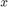
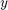
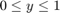
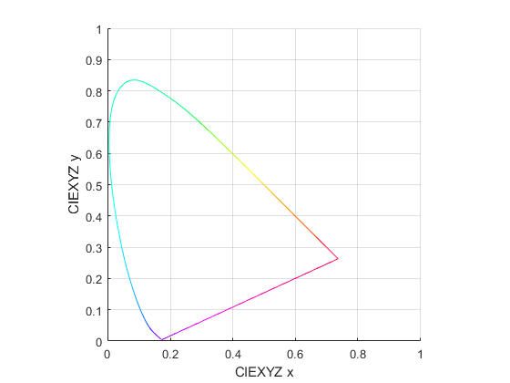
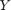
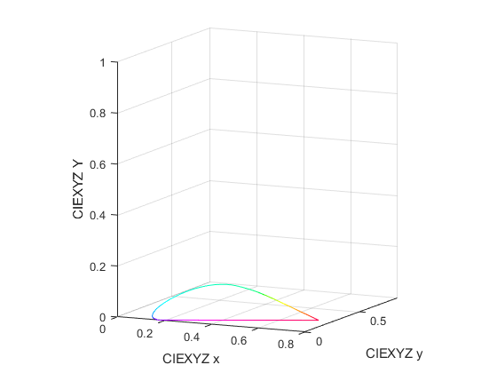
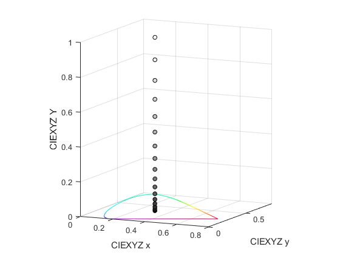
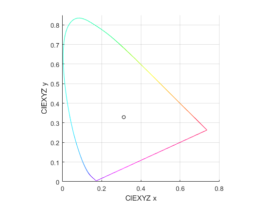
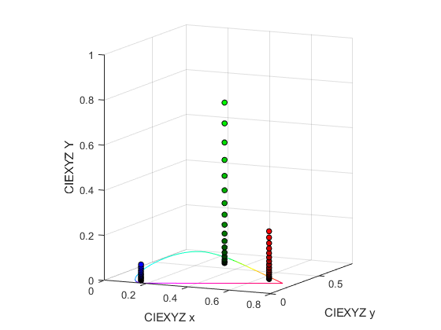
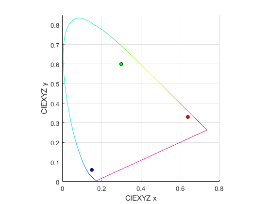

Survey of Proposed Test Methods for IEC 62563-3
This is the commonly seen CIE chromaticity diagram, on a plane spanned by CIEXYZ  and , where and .
sRGB = RGB_in_xyY; clf; sRGB.spectral_locus_color xlabel('CIEXYZ x') ylabel('CIEXYZ y') grid on
We can add a 3rd dimension, CIEXYZ  (i.e., luminance), to form a three-dimensional color space (i.e., CIE xyY) to indicate any color (tristimulus).
clf; sRGB.spectral_locus_color xlabel('CIEXYZ x') ylabel('CIEXYZ y') zlabel('CIEXYZ Y') axis([0 0.8 0 0.85 0 1]) view(25,10) grid on rotate3d on
In monochrome imaging, we usually consider a one-dimensional axis in the CIEXYZ Y direction in this CIE xyY color space. For example, this figure shows 15 measurement points from characterizing a monochrome display to check its comformity with DICOM GSDF. We needs to check its maximum value (Lmax), minimum value (Lmin), and the transition from the minimum to the maximum (gamma). Basically we examine the data points' relative locations vertically. Notice that the Lmin is seldom zero for multiple reasons. In other words, a dark monochrome display still emits light.
clf sRGB.draw_grayscale drawnow
Sometimes we want to know the chromaticity of the monochrome (e.g., color temperature) or whether the gray shades have identicial chromaticity (i.e., gray tracking). We view the data points from the top and check their locations on the CIEXYZ x-y plane horizontally.
view(0,90) drawnow
Color displays have three primary colors instead of grayscales. Therefore, we look at three vertical pillars instead of one. The three pillars have different height because luminance varies among the R, G, and B channels. Notice that the grayscales need to be generated by adding the three channels at a specific ratio (vertically).
clf; sRGB.draw_colorscale drawnow
Again, we need to view the three primary colors from the top to determine their locations on the chromaticity plane (horizontally). In this figure, all 15 red shades overlap perfectly and so do the green and blue shades.
view(0,90) drawnow
| one | two |